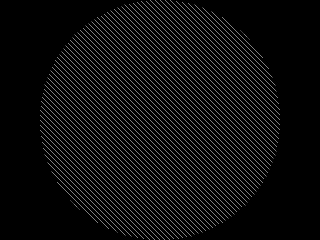

Updating Textures

Last Updated 12/31/12
After creating a texture, it's possible to retrieve and send data from your existing texture. Here we'll get a circle image, black out its background and make a diagonal stripe pattern on it.From LTexture.h
private:
GLuint powerOfTwo( GLuint num );
/*
Pre Condition:
-None
Post Condition:
-Returns nearest power of two integer that is greater
Side Effects:
-None
*/
//Texture name
GLuint mTextureID;
//Current pixels
GLuint* mPixels;
//Texture dimensions
GLuint mTextureWidth;
GLuint mTextureHeight;
//Unpadded image dimensions
GLuint mImageWidth;
GLuint mImageHeight;
};
The LTexture class has a new member variable "mPixels" to hold the pixel data from the texture that we're going to manipulate.
From LTexture.h
bool lock();
/*
Pre Condition:
-An existing unlocked texture
Post Condition:
-Gets member pixels from texture data
-Returns true if texture pixels were retrieved
Side Effects:
-Binds a NULL texture
*/
bool unlock();
/*
Pre Condition:
-A locked texture
Post Condition:
-Updates texture with member pixels
-Returns true if texture pixels were updated
Side Effects:
-Binds a NULL texture
*/
GLuint* getPixelData32();
/*
Pre Condition:
-Available member pixels
Post Condition:
-Returns member pixels
Side Effects:
-None
*/
GLuint getPixel32( GLuint x, GLuint y );
/*
Pre Condition:
-Available member pixels
Post Condition:
-Returns pixel at given position
-Function will segfault if the texture is not locked.
Side Effects:
-None
*/
void setPixel32( GLuint x, GLuint y, GLuint pixel );
/*
Pre Condition:
-Available member pixels
Post Condition:
-Sets pixel at given position
-Function will segfault if the texture is not locked.
Side Effects:
-None
*/
And here's the new set of functions that we'll use to manipulate the pixels. The function lock() gets the pixels from the texture so we can do stuff with them, and unlock() sends
the pixel data back to the texture. getPixelData32() gets a pointer to the entire pixel array and getPixel32()/setPixel32() get/set individual pixels.
From LTexture.cpp
LTexture::LTexture()
{
//Initialize texture ID and pixels
mTextureID = 0;
mPixels = NULL;
//Initialize image dimensions
mImageWidth = 0;
mImageHeight = 0;
//Initialize texture dimensions
mTextureWidth = 0;
mTextureHeight = 0;
}
As always, you should be initializing your variables but you should especially make sure to initialize pointers.
From LTexture.cpp
void LTexture::freeTexture()
{
//Delete texture
if( mTextureID != 0 )
{
glDeleteTextures( 1, &mTextureID );
mTextureID = 0;
}
//Delete pixels
if( mPixels != NULL )
{
delete[] mPixels;
mPixels = NULL;
}
mImageWidth = 0;
mImageHeight = 0;
mTextureWidth = 0;
mTextureHeight = 0;
}
In freeTexture(), we now also have to check if we have any pixel data that needs to be freed.
From LTexture.cpp
bool LTexture::lock()
{
//If texture is not locked and a texture exists
if( mPixels == NULL && mTextureID != 0 )
{
//Allocate memory for texture data
GLuint size = mTextureWidth * mTextureHeight;
mPixels = new GLuint[ size ];
//Set current texture
glBindTexture( GL_TEXTURE_2D, mTextureID );
//Get pixels
glGetTexImage( GL_TEXTURE_2D, 0, GL_RGBA, GL_UNSIGNED_BYTE, mPixels );
//Unbind texture
glBindTexture( GL_TEXTURE_2D, NULL );
return true;
}
return false;
}
To lock the texture for pixel manipulation, we have to check if there are no member pixels (because having member pixels here would mean the texture is already locked) and that a
texture to get pixels from exists. After that, we allocate memory for the pixel data to copy into.
Finally, we bind the texture we want to get the pixel data from, get the data with glGetTexImage(), and unbind the texture.
Finally, we bind the texture we want to get the pixel data from, get the data with glGetTexImage(), and unbind the texture.
From LTexture.cpp
bool LTexture::unlock()
{
//If texture is locked and a texture exists
if( mPixels != NULL && mTextureID != 0 )
{
//Set current texture
glBindTexture( GL_TEXTURE_2D, mTextureID );
//Update texture
glTexSubImage2D( GL_TEXTURE_2D, 0, 0, 0, mTextureWidth, mTextureHeight, GL_RGBA, GL_UNSIGNED_BYTE, mPixels );
//Delete pixels
delete[] mPixels;
mPixels = NULL;
//Unbind texture
glBindTexture( GL_TEXTURE_2D, NULL );
return true;
}
return false;
}
After we're done with our pixel operations, we want to send the pixel data back to the texture. We do this using glTexSubImage2D(). It's more efficent to do this as opposed to just
destroying the texture and making another call to glTexImage2D().
In this piece of code we check if there are member pixels and that there's a texture to update (which means the the texture is locked). After that we bind the texture we want to update and update the texture pixels with glTexSubImage2D().
You may have noticed that glTexSubImage2D() has more arguments than glGetTexImage() or glTexImage2D(). The 3rd/4th/5th/6th arguments represent the portion of the texture you want to update by defining the x offset/y offset/width/height of the area you want to update. Here we're updating the entire texture.
In this piece of code we check if there are member pixels and that there's a texture to update (which means the the texture is locked). After that we bind the texture we want to update and update the texture pixels with glTexSubImage2D().
You may have noticed that glTexSubImage2D() has more arguments than glGetTexImage() or glTexImage2D(). The 3rd/4th/5th/6th arguments represent the portion of the texture you want to update by defining the x offset/y offset/width/height of the area you want to update. Here we're updating the entire texture.
From LTexture.cpp
GLuint* LTexture::getPixelData32()
{
return mPixels;
}
GLuint LTexture::getPixel32( GLuint x, GLuint y )
{
return mPixels[ y * mTextureWidth + x ];
}
void LTexture::setPixel32( GLuint x, GLuint y, GLuint pixel )
{
mPixels[ y * mTextureWidth + x ] = pixel;
}
Now here are our functions to perform operations on our pixel data.
You may be wondering what the equation "y * mTextureWidth + x" in getPixel32() and setPixel32() does. The thing to know here is that the image pixels aren't stored like this in 2D:
They're stored in a 1 dimensional array like this:
So you when you want to get a specific pixel you have to turn the 2D coordinate into a 1D array index. Say we wanted to get pixel number 06 ( which is at x = 2, y = 1) from the 2D image above. With a texture width of 4, y * mTextureWidth + x get us 1 * 4 + 2 which is equal to array index 6.
You may be wondering what the equation "y * mTextureWidth + x" in getPixel32() and setPixel32() does. The thing to know here is that the image pixels aren't stored like this in 2D:
They're stored in a 1 dimensional array like this:
So you when you want to get a specific pixel you have to turn the 2D coordinate into a 1D array index. Say we wanted to get pixel number 06 ( which is at x = 2, y = 1) from the 2D image above. With a texture width of 4, y * mTextureWidth + x get us 1 * 4 + 2 which is equal to array index 6.
From LUtil.cpp
bool loadMedia()
{
//Load texture
if( !gCircleTexture.loadTextureFromFile( "09_updating_textures/circle.png" ) )
{
printf( "Unable to load circle texture!\n" );
return false;
}
//Lock texture for modification
gCircleTexture.lock();
Now in loadMedia() we load our texture as usual. Then we lock it so we can mess with the pixels.
From LUtil.cpp
//Calculate target color
GLuint targetColor;
GLubyte* colors = (GLubyte*)&targetColor;
colors[ 0 ] = 000;
colors[ 1 ] = 255;
colors[ 2 ] = 255;
colors[ 3 ] = 255;
Our circle has a cyan background (r000g255b255a255), that we want to make black. Here we're calculating the pixel value of that color.
From LUtil.cpp
//Replace target color with transparent black
GLuint* pixels = gCircleTexture.getPixelData32();
GLuint pixelCount = gCircleTexture.textureWidth() * gCircleTexture.textureHeight();
for( int i = 0; i < pixelCount; ++i )
{
if( pixels[ i ] == targetColor )
{
pixels[ i ] = 0;
}
}
Here we're going through all the pixels. If any of them are equal to our target color, we set it be transparent black.
From LUtil.cpp
//Diagonal Lines
for( int y = 0; y < gCircleTexture.imageHeight(); ++y )
{
for( int x = 0; x < gCircleTexture.imageWidth(); ++x )
{
if( y % 10 != x % 10 )
{
gCircleTexture.setPixel32( x, y, 0 );
}
}
}
//Update texture
gCircleTexture.unlock();
return true;
}
After blacking out the cyan background, we go through the pixels row by row and column by column to black out certain pixels to make a diagonal line pattern.
After doing that, we unlock the texture so it has our updated pixel data.
After doing that, we unlock the texture so it has our updated pixel data.
From LUtil.cpp
void render()
{
//Clear color buffer
glClear( GL_COLOR_BUFFER_BIT );
//Render circle
gCircleTexture.render( ( SCREEN_WIDTH - gCircleTexture.imageWidth() ) / 2.f, ( SCREEN_HEIGHT - gCircleTexture.imageHeight() ) / 2.f );
//Update screen
glutSwapBuffers();
}
Finally, we render our pixel processed circle